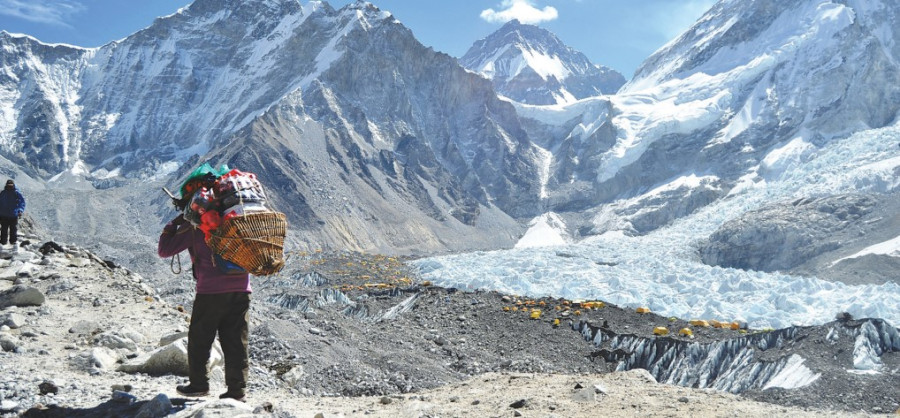

Nepal announced new squad for upcoming t20 world cup
Nepal are hosting a West Indies cricket team for the first time in their history.
Nepal are hosting a West Indies cricket team for the first The matches will take place at TU Cricket Ground in Kirtipur. Read more...
Nepal Investment Summit: Two organizations sign MoU for PPP cooperation
KATHMANDU, April 29: The World Association of PPP Units and Professionals (WAPP) and the Nepalese Association of PPP Professionals and Practitioners (NAPPP) have signed a Memorandum of Understanding (MoU) for bilateral cooperation.
Read more ...
Nepal to use drones to transport garbage from Mount Everest

For the first time, high-altitude guides will face some competition on Everest… from drones.
The Khumbu Pasang Lhamu Rural Municipality, which hosts the 8,848.86 metre-tall Everest, is piloting heavy lifter drones that will bring back garbage from the mighty mountain.
Though officials say that cargo drones will fly on Everest to bring garbage, its success, however, may affect the livelihood of high altitude support staff who navigate the dangerous Khumbu Icefall with tonnes of loads on their backs.
“It's a test. The success means we will use drones in a full-fledged manner to bring garbage from up to 6,500 metres of Camp II, next season,” said Jagat Prasad Bhusal, chief administrative officer of the rural municipality. “We, however, have not discussed whether drones can be used to transport supplies and logistics to Camp II to reduce casualties on the notorious Khumbu Icefall.”